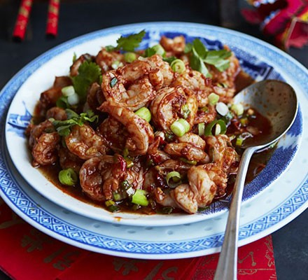

Spicy Sichuan Style Prawns

Description
Stir-fry shellfish with a spicy tomato, ginger and chilli bean sauce for a classic Chinese seafood dish
Ingredients
- ½ tbsp groundnut oil
- 2cm piece ginger , finely chopped
- 2 garlic cloves , coarsely chopped
- 1 spring onion , finely chopped
- 450g raw prawns , shelled and de-veined
Steps
- Heat a wok over a high heat. Add the groundnut oil and, when it is very hot and slightly smoking, add the ginger, garlic and spring onions. Stir-fry for 20 secs, then add the prawns. Stir-fry for about 1 min, then add all the sauce ingredients, along with ½ tsp salt and ½ tsp ground black pepper. Continue to stir-fry for another 3 mins over a high heat. Serve at once, scattered with the coriander and spring onion.